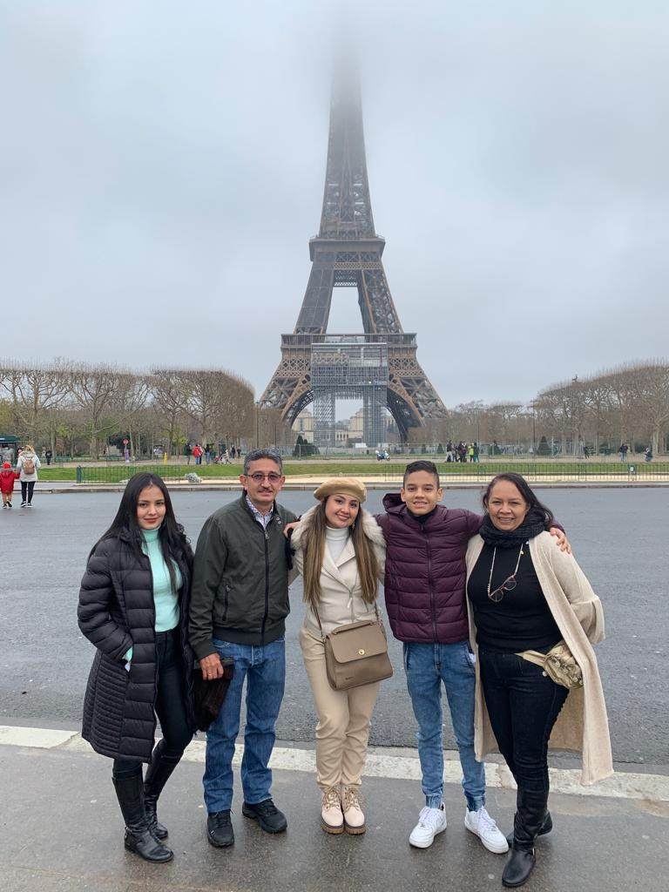

ARTÍCULO DESTACADO
VIAJES Y EXPERIENCIAS
Así es viajar por Europa con familia en plena etapa final de COVID-19
Viajar en familia durante la etapa final de la pandemia significó descubrir lugares nuevos en una época de cambios, restricciones y nuevas formas de recorrer el mundo.
Una mirada personal a los recuerdos, las experiencias y lo que significó viajar en ese contexto.
Leer historia completa →